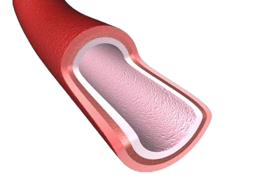
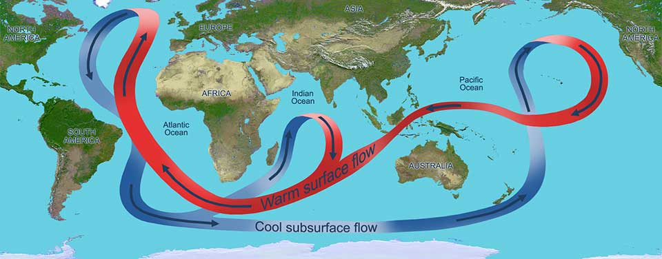

Kami Mandi / Les Croutons
Scroll
⏬
Le rôle et le fonctionnement du systeme circulaire
Le système circulatoire sanguin, également connu sous le nom de système cardiovasculaire,
est responsable du transport du sang, des nutriments, des gaz et des déchets vers et depuis les cellules du corps.
Il comprend le cœur, les vaisseaux sanguins et le sang. Le cœur pompe le sang à travers un réseau de vaisseaux sanguins,
qui comprend les artères, les veines et les capillaires. Les artères transportent le sang riche en oxygène du cœur vers les tissus du corps,
tandis que les veines ramènent le sang pauvre en oxygène vers le cœur pour être réoxygéné.

Les pompes thermohalines

Les pompes thermohalines sont des courants océaniques profonds qui sont principalement entraînés par les différences de température et de salinité de l'eau de mer. Elles jouent un rôle crucial dans la régulation du climat en redistribuant la chaleur autour de la planète. Ce processus est également connu sous le nom de circulation thermohaline ou circulation méridienne de retournement.
Comparaison
La circulation sanguine et les pompes thermohalines partagent des similitudes dans leur rôle de transport et de régulation. La circulation sanguine transporte le sang et les nutriments dans le corps, tandis que les pompes thermohalines redistribuent la chaleur et les nutriments dans les océans. Les deux systèmes sont essentiels pour maintenir l'équilibre et le bon fonctionnement de leurs environnements respectifs.

Les déséquilibres systémiques
Les déséquilibres systémiques de l'océan, tels que le 7e continent de plastique, peuvent être comparés à un cancer dans le corps humain. Tout comme le cancer se développe de manière incontrôlée et perturbe le fonctionnement normal des organes, les amas de plastique dans l'océan perturbent les écosystèmes marins et nuisent à la vie aquatique. Ces déséquilibres systémiques nécessitent des interventions pour être corrigés, tout comme le cancer nécessite un traitement pour être éradiqué.
les conséquences des perturbations
Les perturbations du système circulatoire peuvent entraîner des maladies cardiovasculaires, des crises cardiaques et des accidents vasculaires cérébraux. De même, les perturbations des courants océaniques peuvent provoquer des changements climatiques, affecter les écosystèmes marins et entraîner des événements météorologiques extrêmes. Ces conséquences montrent l'importance de maintenir l'équilibre de ces systèmes pour la santé humaine et environnementale.
Quelles solutions apporter ?
Pour prévenir les maladies cardiovasculaires, il est recommandé de maintenir une alimentation équilibrée, de faire de l'exercice régulièrement et de réduire le stress. De même, pour protéger les océans, il est essentiel de réduire la pollution plastique, de préserver les écosystèmes marins et de lutter contre le changement climatique. Ces actions individuelles et collectives sont essentielles pour préserver la santé des systèmes circulatoires humains et océaniques.